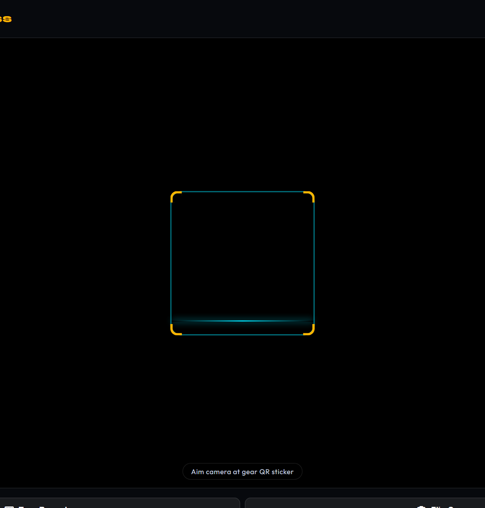

Equipment Fleet Management & Mobile QR Code Logistics
High-end sound systems and wireless microphones represent tens of thousands of dollars in capital investment. Thunder House maintains absolute inventory accountability using physical QR stickers and real-time mobile camera scanning.
1. The Equipment Fleet Roster
Located at admin/gear.html, the equipment dashboard tracks every physical item owned by the company:

The 4 Equipment Operational States:
- Available in Studio: Equipment is stored safely in our Oklahoma City facility, tested, charged, and ready for deployment.
- Packed / In Transit: Gear has been scanned into road cases and loaded into the performance vehicle.
- Deployed at Gig: Actively wired and operational at the venue.
- Maintenance / Inspection: Item flagged with damage, frayed cabling, or dead battery packs, locked from booking until serviced.
2. The Mobile QR Scanner
Staff members never need to manually type serial numbers. Using their mobile phones, staff navigate to admin/gear-scanner.html to scan durable QR code stickers attached to each road case and speaker chassis:

admin/gear-scanner.html. Pointing your camera at any gear sticker immediately recognizes the unit.
Pack-Out & Return Protocol:
- Pre-Gig Pack-Out (Check-Out): As road cases are rolled to the truck, staff scan each item in Continuous Batch Mode. The system beeps, vibrates, and changes the database status to
in_transit. - Post-Gig Unpack (Check-In): Upon returning to the studio, staff scan every item back in. The status reverts to
availablewith physical location confirmed.
Our automated background daemon (gear_return_check) scans the equipment table daily at noon. If an event ended more than 24 hours ago and any equipment remains marked in_transit, a red alert is flagged on the Today dashboard and an alert notification is dispatched to prevent forgotten gear at venues!